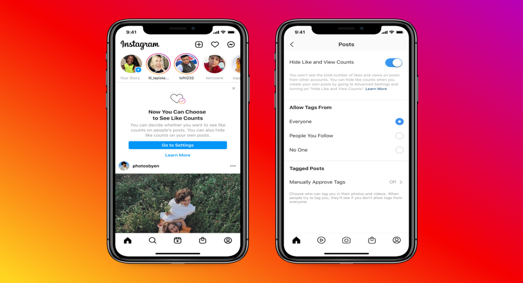
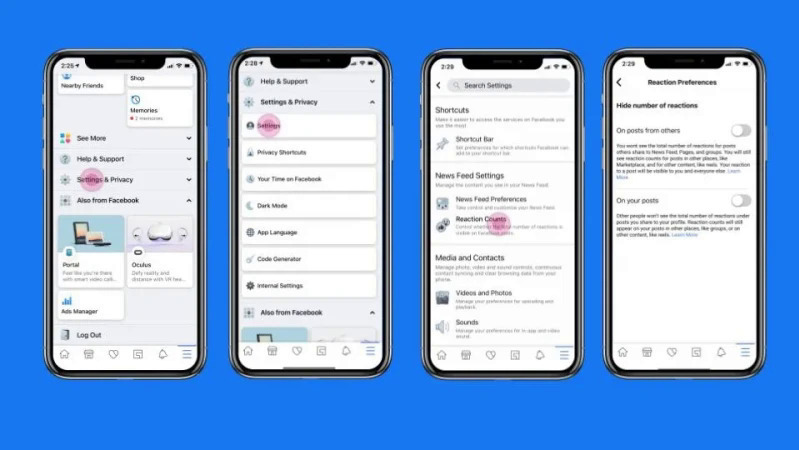

Người dùng có thể ẩn lượt like trên Facebook
vừa triển khai tính năng cho phép người dùng hiển thị hoặc ẩn số lượt thích bài đăng trên hai nền tảng Facebook và Instagram.
Ở cả hai nền tảng, người dùng có thể chọn không hiển thị số lượt thích trên bài đăng của người khác và của chính mình. Tính năng kiểm soát này áp dụng cho tất cả các post trên Newsfeed.
Trong Instagram, người dùng truy cập tùy chọn Posts trong phần Setting, sau đó nhấn vào Hide Like Count để ẩn lượt thích. Hiện tính năng này đã được triển khai cho hầu hết người dùng trên thế giới, trong đó có Việt Nam.

Trong khi đó, trên Facebook, người dùng vào Settings & Privacy > Settings > Reaction Counts > Reaction Preferences để chọn ẩn hoặc hiện số lượt thích. Tuy nhiên, tính năng hiện chỉ triển khai tại một số thị trường nhất định. Tại Việt Nam, công cụ này sẽ có mặt trong vài tuần tới.
Bên cạnh đó, người dùng cũng có thể lựa chọn ẩn số lượt thích trước khi chia sẻ một nội dung nào đó, cũng như có thể mở/tắt tùy chọn, kể cả khi nội dung đã được đăng tải.

"Mọi người có thể lựa chọn ẩn trên các bài đăng của chính mình để người khác không thấy được bài đăng đó có bao nhiêu người thích. Nhờ đó, mọi người có thể tập trung vào trải nghiệm các nội dung như hình ảnh hay video được chia sẻ thay vì quan tâm tới số lượt thích", đại diện Facebook cho biết.
Một số chuyên gia đánh giá, việc tắt tính năng đếm like là điều nên làm. "Loại bỏ bộ đếm giúp giảm căng thẳng, lo lắng và nhiều cảm xúc tiêu cực khi sử dụng mạng xã hội, bởi không ít người thường đố kỵ nhau thông qua lượt thích bài viết", một chuyên gia cho biết. "Tắt bộ đếm cũng giúp người dùng tập trung vào nội dung bài viết nhiều hơn".
Trên mạng xã hội, đa số ý kiến đồng tình với động thái của Facebook. "Ủng hộ việc bỏ lượt thích vì sẽ hạn chế tình trạng 'sống ảo' hiện nay, nhất là với các nội dung câu like phản cảm", thành viên Minh Thành bình luận. "Các dịch vụ tăng like, mua bán like cũng sẽ giảm bớt". Tuy nhiên, một số ý kiến khác lại cho rằng tùy chọn ẩn lượt thích có thể khiến họ không thể đánh giá được mức độ hấp dẫn của các bài viết.
Tính năng ẩn lượt thích từng được Facebook thử nghiệm từ năm ngoái trên Instagram và nhận được phản hồi tích cực. Vào năm 2019, mạng xã hội cũng thử nghiệm việc ẩn lượt thích cho Facebook nhưng chỉ riêng tại Australia. Khi đó, người dùng vẫn thấy số lượt thích trên các bài viết của chính mình, nhưng những người khác chỉ có thể xem nội dung đó được phản hồi như thế nào thông qua các biểu tượng Reaction. Nếu muốn biết cụ thể số lượt, cách duy nhất là đếm thủ công.
Xin liên hệ ngay với Mua bán linh kiện điện tử để biết thêm thông tin về giá cả sản phẩm:
Điện thoại: 0367899999 ~ 0968686868;
Facebook: Trường Xuân
Điện thoại: 0367899999 ~ 0968686868;
Facebook: Trường Xuân
- Quý khách nhận hàng mới thanh toán tiền;
- Giao hàng trực tiếp với Khách hàng tại Hà Nội;
- Khách hàng ở tỉnh khác chúng tôi sẽ chuyển phát nhanh theo đường bưu điện;
- Miễn phí toàn bộ cước vận chuyển đối với khách hàng mua sỉ trên toàn quốc.